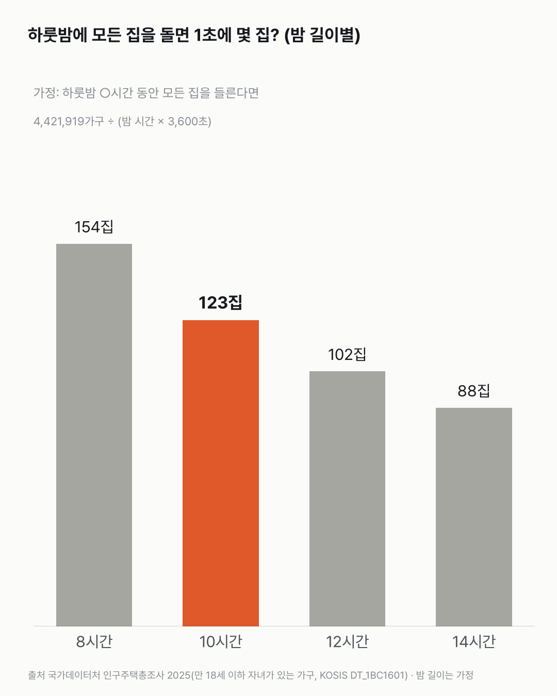

산타가 하룻밤에 442만 가구를 돌면, 한 집에 몇 초?
선물을 내려놓기는커녕 문 앞에 서 있기도 어려운 시간이에요. 숫자는 가구 수 하나만 공식 통계이고, '하룻밤 10시간'과 '모든 집을 들른다'는 계산을 위한 가정이에요.

3줄 요약
- 2025년 한국에서 만 18세 이하 자녀가 있는 가구는 4,421,919가구예요.
- 가정: 산타가 하룻밤 10시간 동안 이 집을 모두 들른다면, 1초에 약 123집을 들러야 해요.
- 한 집에 머무는 시간은 약 0.008초(1천분의 8초)예요.
아이 있는 집 4,421,919가구
2025년 인구주택총조사에서 만 18세 이하 자녀가 있는 가구는 4,421,919가구예요. 이 글에서 공식 통계로 쓰는 숫자는 이것 하나예요.
가정: 하룻밤 10시간
하룻밤을 10시간(3만 6천 초)으로 가정했어요. 지역과 날짜마다 밤 길이는 달라서, 공식 일몰·일출 시각 대신 계산하기 쉬운 값을 썼어요.
| 하룻밤 길이(가정) | 1시간에 | 1초에 | 한 집에 |
|---|---|---|---|
| 8시간 | 약 55만 2,740집 | 약 154집 | 약 0.0065초 |
| 10시간 | 약 44만 2,192집 | 약 123집 | 약 0.0081초 |
| 12시간 | 약 36만 8,493집 | 약 102집 | 약 0.0098초 |
| 14시간 | 약 31만 5,851집 | 약 88집 | 약 0.0114초 |
- 밤을 14시간으로 길게 잡아도 한 집에 0.02초가 안 돼요.
- 1초에 한 집씩 들르려면 4,421,919초, 약 51일이 걸려요.
숫자를 다시 보며
산타가 실제로 있는지, 몇 집을 들르는지 잰 숫자가 아니에요. 아이 있는 집 수를 하룻밤 시간으로 나눈 가상 계산이에요. 집과 집 사이를 오가는 시간, 굴뚝을 오르내리는 시간은 넣지 않았어요. 그걸 넣으면 한 집에 머무는 시간은 더 짧아져요. 여러분 집에는 몇 시에 올까요?
이 숫자는 어디서 왔나요
출처
기준일 2025년 인구주택총조사 값이에요. KOSIS 값은 2026년 11월 14일에 받았어요.
국가데이터처인구주택총조사
- 만 18세 이하 자녀가 있는 가구KOSIS DT_1BC1601
가구 수
어떻게 셌나요
- 가구 수: 국가데이터처 「인구주택총조사」 2025(등록센서스), 만 18세 이하 자녀가 있는 가구 4,421,919가구(KOSIS DT_1BC1601).
- 1초에 몇 집: 가구 수 ÷ (하룻밤 시간 × 3,600초).
- 한 집에 몇 초: (하룻밤 시간 × 3,600초) ÷ 가구 수.
- 가정: 하룻밤 10시간, 산타가 이 가구를 모두 들른다, 이동 시간은 0이다.
| 항목 | 값 | 잰 것 / 가정 |
|---|---|---|
| 만 18세 이하 자녀가 있는 가구 | 4,421,919가구 | 잰 것(총조사) |
| 하룻밤 길이 | 10시간 | 가정 |
| 모든 가구를 들른다, 이동 시간 0 | — | 가정 |
| 1초에 들르는 집 | 약 123집 | 계산 |
| 한 집에 머무는 시간 | 약 0.008초 | 계산 |
한계 4가지
이 데이터로 말할 수 없는 것
- 가정: 산타가 하룻밤 10시간 동안 이 가구를 모두 들른다면이에요. 실제 밤 길이는 지역·날짜마다 달라요.
- '만 18세 이하 자녀가 있는 가구'를 썼어요. 12세 이하만 따로 센 표는 총조사에 없어요.
- 이동 시간, 집 크기, 아이 수는 넣지 않았어요. 한 집에 아이가 여럿이어도 한 집으로 셌어요.
- 가상 계산이에요. 산타의 실제 속도나 방문을 말하는 숫자가 아니에요.
새 글 나오면 받아 보기
피드 리더 앱에 이 사이트 주소를 한 번 넣어 두면, 새 글이 올라올 때 앱에 떠요. 가입이나 메일 주소는 필요 없어요.
받는 법 보기
- 피드 리더 앱을 하나 골라요. 새 글을 모아 보여 주는 앱이에요. 예를 들면 Feedly나 Inoreader가 있어요. 둘 다 무료고 웹·휴대폰에서 써요.
- 앱에서 '구독 추가'(+)를 누르고 아래 주소를 붙여 넣어요.
- 끝이에요. 새 글이 올라오면 앱 목록에 떠요.
https://protofu.github.io/opendata-insight/feed.xmlFeedly를 쓴다면 여기를 눌러 바로 추가할 수도 있어요.